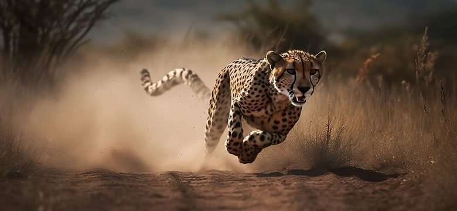

Article
CHEETAH
The cheetah (Acinonyx jubatus) is a large cat and the fastest land animal. It has a tawny to creamy white or pale buff fur that is marked with evenly spaced, solid black spots. The head is small and rounded, with a short snout and black tear-like facial streaks. It reaches 67–94 cm (26–37 in) at the shoulder, and the head-and-body length is between 1.1 and 1.5 m (3 ft 7 in and 4 ft 11 in). Adults weigh between 21 and 72 kg (46 and 159 lb). The cheetah is capable of running at 93 to 104 km/h (58 to 65 mph);[3][4] it has evolved specialized adaptations for speed, including a light build, long thin legs and a long tail.